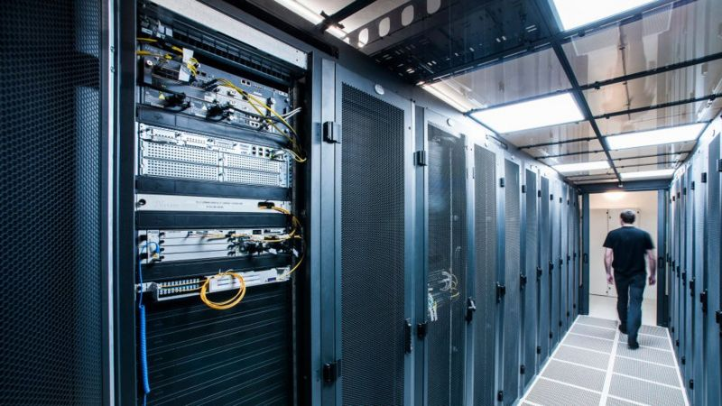

ARM: UK-based chip designer sold to US firm Nvidia
By Leo KelionTechnology desk editor
14 September
UK-based computer chip designer ARM Holdings is being sold to the American graphics chip specialist Nvidia.
The deal values ARM at $40bn (£31.2bn), four years after it was bought by Japanese conglomerate Softbank for $32bn.
ARM's technology is at the heart of most smartphones, among many other devices.
Nvidia has promised to keep the business based in the UK, to hire more staff, and to retain ARM's brand.
It added that the deal would create the premier computing company for the age of artificial intelligence
(AI).
ARM will remain headquartered in Cambridge,
said Nvidia's chief executive Jensen Huang.
We will expand on this great site and build a world-class AI research facility, supporting developments in healthcare, life sciences, robotics, self-driving cars and other fields.
WATCH: Nvidia chief explains why he wants to buy ARM
A number of business leaders have signed an open letter calling on the Prime Minister to stop the merger.
A senior government source told the BBC that it would not block the sale, but said conditions could be imposed on the takeover.
'Meaningless' promises
Softbank made commitments to secure jobs and keep ARM's headquarters in the UK until September next year.
far, when you read the announcement coming from Nvidia they said they will honour that Softbank has made at the time
, said Sonja Laud, chief investment officer at Legal & General Investment Management.
But with the expiry about to happen and obviously the Brexit negotiations under way it will be very interesting to see how this develops in the future.
This appears to address concerns that British jobs would be lost and decision-making shifted to the US. Last week, the Labour Party had urged the government to intervene.
But two of ARM's co-founders have raised other issues about the takeover.
Hermann Hauser and Tudor Brown had suggested ARM should remain "neutral", rather than be owned by a company like Nvidia, which produces its own processors.
The concern is that there would be a conflict of interest since ARM's clients would become dependent on a business with which many also compete for sales.
Moreover, the two co-founders also claimed that once ARM was owned by an American firm, Washington could try to block Chinese companies from using its knowhow as part of a wider trade clash between the countries.
Hermann Hauser (left) and Tudor Brown (right) have warned the takeover would have negative consequences
If ARM becomes a US subsidiary of a US company, it falls under the Cfius [Committee on Foreign Investment in the United States] regulations,
Mr Hauser told BBC Radio 4's Today programme.
[That] means that if hundreds of UK companies that incorporate ARM's [technology] in their products, want to sell it, and export it to anywhere in the world including China - which is a major market - the decision on whether they will be allowed to export it will be made in the White House and not in Downing Street.
He added that he believed the pledge to retain and increase the number of UK jobs was "meaningless" unless UK ministers stepped in to make it legally enforceable.
- ARM: Can 'crown jewel' of UK technology be protected?
- ARM's sale could put tech sector 'in jeopardy'
- Chinese chip giant 'in shock' after US trade ban threat
But ARM's chief executive played down the threat of export bans.
It isn't to do with the ownership of the company, it's all to do with analysis of the product itself,
Simon Segars told the BBC.
The majority of our products are designed in the UK or outside the US, and the majority of our products don't fall under much of the US export control set of rules.
Mr Huang added that ARM had some of the finest computer scientists in the world
in Cambridge and he intended to both retain them and attract others to what would become Nvidia's largest site in Europe.
The UK prime minister's spokesman said ministers have spoken to both companies
, adding that the government would be scrutinising the deal including what it means for the Cambridge HQ
.
Chip creators
ARM creates computer chip designs that others then customise to their own ends. It also develops instruction sets, which define how software controls processors.
It is based in Cambridge but also has offices across the world, including a joint venture in Shenzhen, China.
Hundreds of companies license its innovations including Apple, Samsung, Huawei and Qualcomm. To date, ARM says 180 billion chips have been made based on its solutions.
When Softbank acquired ARM, it promised to keep the company's headquarters in the UK and to increase the number of local jobs, which it did.
Softbank's founder Masayoshi Son described the firm as being a "crystal ball" that would help him predict where tech was heading. But losses on other investments, including the office rental company WeWork, prompted a rethink.
California-headquartered Nvidia overtook Intel to become the world's most valuable chipmaker in July.
Until now, it has specialised in high-end graphics processing units (GPUs). These are commonly used by gamers to deliver more detailed visuals, as well as by professionals for tasks including scientific research, machine learning, and cryptocurrency "mining".
Nvidia is also one of ARM's clients, using its designs to create its line-up of Tegra central processing units (CPUs).
Under the terms of the deal, Nvidia will pay Softbank $21.5bn in its own stock and $12bn in cash. It will follow with up to a further $5bn in cash or stock if certain targets are met.
Nvidia will also issue $1.5bn in equity to ARM's employees.
Server chips
Mr Huang has already said that one of the changes he wants to make is to accelerate development of ARM's designs for CPUs used in computer servers - a rapidly growing sector.
Amazon is among companies that are already betting on the tech.
The use of internet-based services has led to ever-growing demand for computer servers
But experts say one risk Nvidia faces is that the takeover could encourage ARM's wider client list to shift focus to a rival type of chip technology, which lags behind in terms of adoption but has the benefit of not being controlled by one company.
ARM is facing growing competition from RISC-V, an open-source architecture,
wrote CCS Insight's Geoff Blaber in a recent research note.
If its partners believed that ARM's integrity and independence was compromised, it would accelerate the growth of RISC-V and in the process devalue ARM.
Mr Blaber also suggested regulators might block the deal.
This process will take months if not years with a high chance of failure,
he told the BBC.
Mr Huang has said that he expects it to take more than a year to "educate" regulators and answer all their questions, but said he had every confidence
they would ultimately approve the investment.
It's a deal which the man who founded ARM says is a disaster.
And many in the UK's technology industry will agree with Hermann Hauser.
He opposed the 2016 sale of the chip designer to Softbank but accepted that the Japanese firm stood by its guarantees to boost employment and research in Cambridge.
But a takeover by Nvidia, one of the many firms that licences ARM's designs, appears to pose a threat to its business model - why will its hundreds of other customers now have faith that they will have equal access to its technology?
In recent days leading figures in the Cambridge technology sector have lobbied Downing Street, calling for ministers to intervene to bring ARM back under UK ownership. There have been signs that the government is considering a more active industrial policy.
Dominic Cummings, who has talked of the need for the UK to have a trillion dollar tech company, is leading the drive for a more interventionist approach.
Now, with Hermann Hauser and others warning that this deal will make Britain a US vassal state, the government is under pressure to step in and ensure that control over vital home-grown technology is not lost to a foreign power.